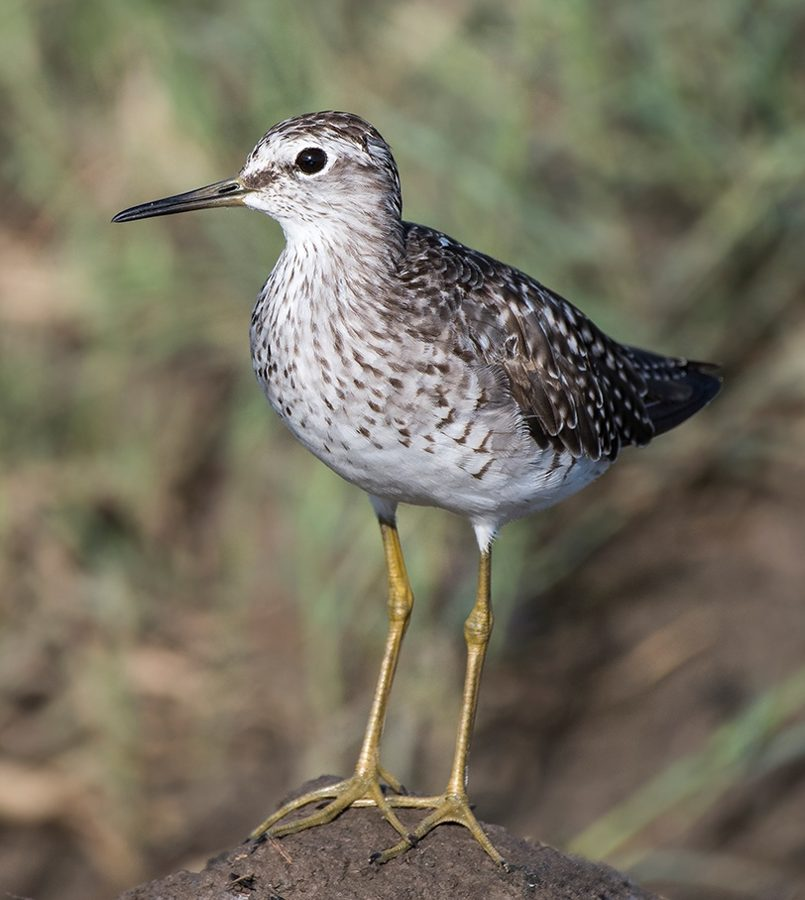

वुड सैंडपाइपरWood Sandpiper
Tringa glareola · Scolopacidae · BRD-0125

- Scientific name वैज्ञानिक नाम
- Tringa glareola (Linnaeus, 1758)
- Family कुल
- Scolopacidae
- Hindi हिंदी
- वुड सैंडपाइपर
- Local names स्थानीय नाम
- wood sandpiper, wood sand piper, sandpiper, sandpipar
- Status here यहाँ की स्थिति
- native
- Movement आवागमन
- Winter visitor
- IUCN IUCN
- LC
- Review समीक्षा
- audited and independently read
When to look कब देखें
Winter visitor शीतकालीन प्रवासी. Expected mainly in August, September, October, November, December, January, February, March, April. मुख्यतः अगस्त, सितंबर, अक्टूबर, नवंबर, दिसंबर, जनवरी, फ़रवरी, मार्च, अप्रैल में अपेक्षित।
Arrives in August–September from breeding grounds in northern Eurasia; departs by April. Expected at shallow wetlands and marshes. All migrants and visitors →
Uses and possibilities उपयोग और संभावनाएँ
Guide: Where the winter birds are: Bakhira, Parvati Arga and the Ayodhya jheels
Drawn from the documented uses in the profile below, where each is labelled traditional, current or a research lead. All uses →
Tell it apart from इनसे अलग पहचानें
वुड सैंडपाइपर / Wood Sandpiper
Tringa glareola (Linnaeus, 1758) — Scolopacidae
वुड सैंडपाइपर — यह छोटी-मझोली वाडर है जो उत्तरी यूरेशिया से सर्दियों में भारत आती है। इसकी पीठ गहरी भूरी, धब्बों वाली होती है, और इसके पैर पीले-हरे रंग के होते हैं। यह Green Sandpiper से बड़ी, पर Common Redshank से छोटी होती है। उथले तालाबों, खेतों के नालों और दलदली इलाकों में अकेले या छोटे समूहों में दिखाई देती है।
Quick Identification त्वरित पहचान
| Feature | Description | |
|---|---|---|
| Size | Small to medium wader; 19–21 cm long | |
| Upperparts | Brown with bold white spotting and barring (distinctive) | |
| Underparts | White; breast lightly spotted | |
| Legs | Yellowish-green or olive-green; relatively long | |
| Bill | Thin, straight, greenish-grey with dark tip | |
| Rump and tail | White rump with some barring on sides (less barred than [[green_sandpiper\ | Green Sandpiper]]) |
| Wings | Pale underwing visible in flight (paler than Green Sandpiper) |
Field tip: A small spotted wader with yellowish legs and pale underwings, at shallow wetlands — is a Wood Sandpiper. The bold spotting on the back and yellowish legs distinguish it from Green Sandpiper. Often in small flocks.
हिंदी — कैसे पहचानें:
छोटी वाडर; धब्बेदार पीठ।
पीले पैर (हरे नहीं)।
उड़ान में हल्के पंख।
उथले तालाबों में छोटे झुंड।
Morphology आकारिकी
Biometrics:
| Measurement | Range |
|---|---|
| Total length | 190–210 mm |
| Wing (flattened chord) | 118–133 mm |
| Tail | 50–65 mm |
| Bill | 28–35 mm |
| Tarsus | 26–32 mm |
| Weight | 45–75 g |
Size: 19–21 cm long; wingspan 38–45 cm. Weight 45–75 g. Intermediate between Green Sandpiper (smaller) and Common Redshank (larger).
Plumage: Distinctive. Upperparts brown with bold white spotting and barring on mantle and coverts. Head brown with white supercilium (eye stripe). Breast white with light spotting; belly white. Rump white with some barring on sides (less heavily barred than Green Sandpiper). Upper tail coverts lightly barred.
Legs and feet: Yellowish-green or olive-green; relatively long compared to Green Sandpiper.
Bill: Thin, straight, greenish-grey with dark tip.
Wings: Upper wing coverts brown with bold spots. Flight feathers dark. Underwing pale — paler than Green Sandpiper.
Sexes: Females slightly larger; little sexual dimorphism.
Vocalisations. Two main call types:
- Flight call: A sharp, chip-like chit-chit-weet or chif-if-if, given when flushed.
- Alarm call: Sharp chip calls given on ground.
हिंदी: तीव्र "चिट-चिट" की आवाज़। उड़ते समय कूकना।
Behaviour & Ecology व्यवहार और पारिस्थितिकी
Wading and foraging: Wood Sandpipers are specialist wadies, probing in soft mud and shallow water. More gregarious than Green Sandpipers but less so than Redshanks.
Feeding: Primarily insectivorous:
- Aquatic insect larvae (chironomids, mayflies, dragonflies)
- Small aquatic invertebrates
- Terrestrial insects on exposed banks
- Occasionally small fish
Feeding behaviour: Methodical walking with frequent probing. Often feed in loose flocks.
Habitat preference: Prefer shallow wetlands and marshes with good vegetation; paddy fields and agricultural ditches. Adaptable to various shallow water habitats.
Flight behaviour: When flushed, give sharp calls and fly in rapid, direct flight. Pale underwings visible.
Alert: Moderately wary; slower to flush than Green Sandpiper but quicker than Redshank.
हिंदी: छोटे झुंड में उथले तालाबों में रहते हैं। पीले पैरों को लगातार चलाते हैं। खेतों के नालों में भी पाए जाते हैं।
Life Cycle / Phenology जीवन चक्र
Winter visitor: Arrives in eastern UP from August, with main arrival September–October. Departs February–April, with most birds gone by April.
Breeding range: Northern forests and taiga of Eurasia from Scandinavia to Siberia. Breeds April–August. Unlike Common Redshank (ground nest), nests in abandoned tree nests of other species.
Migration: Long-distance migrant. Diurnal and nocturnal migration.
Wintering: More gregarious than Green Sandpiper, forming small flocks at productive water bodies.
Moult: Complete moult before arrival; breeding plumage acquired on wintering grounds.
Timing in UP: Early arrival August; main arrival September–October; peak December–February; departure February–April.
हिंदी: अगस्त में आना शुरू करते हैं, अप्रैल तक चले जाते हैं। छोटे झुंड में रहते हैं।
Host Plants or Prey आहार
| Food Type | Examples | Capture Method |
|---|---|---|
| Aquatic insect larvae | Chironomids, mayfly nymphs, dragonfly nymphs | Probing and picking |
| Small terrestrial insects | Flies, small beetles | Gleaning on exposed banks |
| Small crustaceans | Freshwater shrimp | Picking from water |
| Aquatic worms | Oligochaetes | Probing in mud |
हिंदी: कीड़े और छोटे जीव खोजता है। पानी और भूमि दोनों पर खाना ढूंढता है।
Predators / Natural Enemies शत्रु
- Avian predators: Marsh Harrier, Shikra, Peregrine Falcon, Indian Eagle-Owl
- Mammalian predators: Fox, mongoose, wild cat
- At nest: Crows, weasels
हिंदी: शिकारी चिड़ियाँ इसका शिकार करती हैं।
Agricultural / Human Relevance कृषि प्रासंगिकता
Protected status: Listed under Schedule IV of the Wildlife (Protection) Act, 1972 (amended 2022). Hunting is illegal in India.
Ecological value: Important insectivore at shallow wetlands; helps control aquatic insects including mosquito larvae.
Wetland health indicator: Species present indicates productive shallow wetlands with good insect populations.
Cultural significance: Noted in bird survey literature of UP.
हिंदी: यह पक्षी विधि अधिनियम 1972 के अंतर्गत संरक्षित है। यह छोटे झुंड में तालाबों में रहता है।
Expected Locally स्थानीय रूप से अपेक्षित
Not a field record. Written from published accounts for eastern Uttar Pradesh. No confirmed local sighting yet — if you have seen it, that is what the atlas needs.
अभी तक स्थानीय पुष्टि नहीं। यह विवरण प्रकाशित स्रोतों से है, किसी अवलोकन से नहीं।
The Wood Sandpiper is a winter visitor to Ayodhya district. Yashmita-Ulman & Singh (2022) recorded this species in their survey of unprotected wetlands of Ayodhya district, including Samda Jheel and Sirsa Jheel. The species is expected at shallow wetlands throughout eastern UP — flooded fields, agricultural ditches, and wetland margins. Unlike Common Redshank (large rivers) and Green Sandpiper (small ponds), Wood Sandpiper favours intermediate-sized shallow water bodies. Often occurs in small flocks. Peak occurrence should be September–March. A first record would require a dated photograph with GPS coordinates and date, submitted through the About page.
Distribution वितरण
Global range: Breeds in northern Eurasia; winters from Mediterranean region to southern Africa and Asia.
In India: Widespread winter visitor throughout the subcontinent, particularly on shallow wetlands and marshes.
In Uttar Pradesh: Regular winter visitor throughout the state, particularly common in eastern and central districts on shallow water bodies.
In Basti district / eastern UP: Winter visitor to shallow wetlands, marshes, and paddy fields. Expected August–April, with peak occurrence September–March.
Research Questions शोध प्रश्न
- What is the population and distribution of Wood Sandpipers across eastern UP wetlands?
- How does the flocking behaviour of Wood Sandpipers differ from Common Redshank and Green Sandpiper?
- क्या वुड सैंडपाइपर सर्दियों में एक ही जलाशय पर रहते हैं या विभिन्न स्थानों पर जाते हैं?
- What is the diet composition of Wood Sandpipers in different wetland types?
- How do Wood Sandpiper numbers correlate with the extent of shallow, marshy habitat at the landscape level? (A child can measure water area and count birds.)
- Are the same flocks of Wood Sandpipers moving through eastern UP, or are populations resident for the winter?
Similar Species मिलती-जुलती प्रजातियाँ
| Species | Key Difference | Hindi | Field Rule | |
|---|---|---|---|---|
| Green Sandpiper (Tringa ochropus) | Smaller; uniformly dark-backed; dark legs; dark underwing | ग्रीन सैंडपाइपर | Green Sandpiper is smaller and lacks bold spotting. Legs are dark (not yellow). Underwings are dark (not pale). | |
| [[little_stint\ | Little Stint]] (Calidris minuta) | Much smaller; shorter bill; grey back; rufous cap in breeding | लिटिल स्टिंट | Little Stint is much smaller and has a much shorter bill. Different feeding style and structure. |
| Common Redshank (Tringa totanus) | Much larger; bright red legs and bill base | रेडशैंक | Redshank is much larger with unmistakably red legs and bill base. Much paler and less spotted. | |
| Spotted Redshank (Tringa erythropus) | Larger; red legs; darker overall | स्पॉटेड रेडशैंक | Spotted Redshank is larger and darker with red legs (not yellow). |
Field rule: A spotted wader with yellowish legs and pale underwings, in small flocks at shallow wetlands — is a Wood Sandpiper. The bold spotting and yellow legs distinguish it from Green Sandpiper. Paler and more spotted than Green Sandpiper.
Taxonomy & Classification वर्गीकरण
Original description. Described by Carl Linnaeus in 1758 in Systema Naturae (10th edition), page 145, as Scolopax glareola. Type locality: Europe.
Subspecies. Monotypic — T. glareola is the only recognised subspecies.
Family and order placement. Order Charadriiformes; family Scolopacidae. Genus Tringa contains eight species of shanks.
Phylogenetic notes. Tringa glareola is sister to T. ochropus (Green Sandpiper). Both are more closely related to each other than to larger Tringa species.
IUCN status rationale. Assessed as Least Concern (LC) globally. The global population is large (around 200,000–300,000 individuals) and stable. The species is adaptable to various shallow wetland types.
Photo Gallery फोटो गैलरी
No photos yet — add field photos to media/species/wood_sandpiper/ and run node scripts/sync_photos.js.
Wanted photos:
- [ ] Individual showing spotted back and yellow-green legs (धब्बेदार पीठ और पीले पैर)
- [ ] In flight showing pale underwings (उड़ान में हल्के पंख)
- [ ] Small flock at shallow wetland (उथले तालाब में झुंड)
- [ ] Close-up of head (सिर क्लोज़-अप)
- [ ] Probing in mud (कीचड़ में)
References संदर्भ
- Linnaeus, C. (1758). Systema Naturae per Regna Tria Naturae. 10th ed. Laurentii Salvii, Holmiae.
- Ali, S. & Ripley, S.D. (1987). Handbook of the Birds of India and Pakistan. Vol. 2. Oxford University Press, New Delhi. Pp. 248–252.
- Grimmett, R., Inskipp, C. & Inskipp, T. (2011). Birds of the Indian Subcontinent. 2nd ed. Christopher Helm, London. Pp. 129–130.
- Yashmita-Ulman & Singh, M. (2022). Avifaunal diversity in unprotected wetlands of Ayodhya District, Uttar Pradesh, India. Journal of Threatened Taxa, 14(8): 21561–21578.
- Cramp, S. & Simmons, K.E.L. (1983). Handbook of the Birds of Europe, the Middle East and North Africa. Vol. 3. Oxford University Press. Pp. 128–145.
- BirdLife International (2023). Tringa glareola. IUCN Red List of Threatened Species. IUCN, Cambridge.
Source file: species/fauna/birds/wood_sandpiper.md